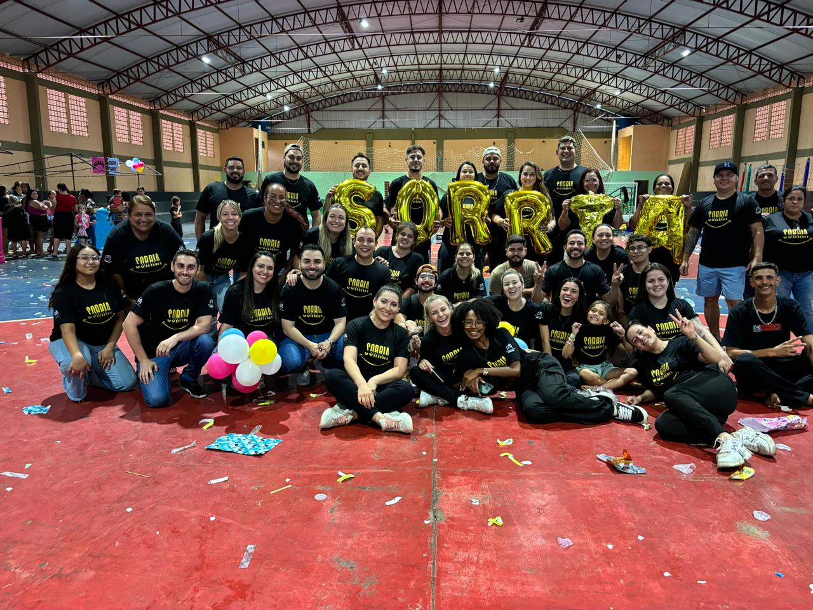
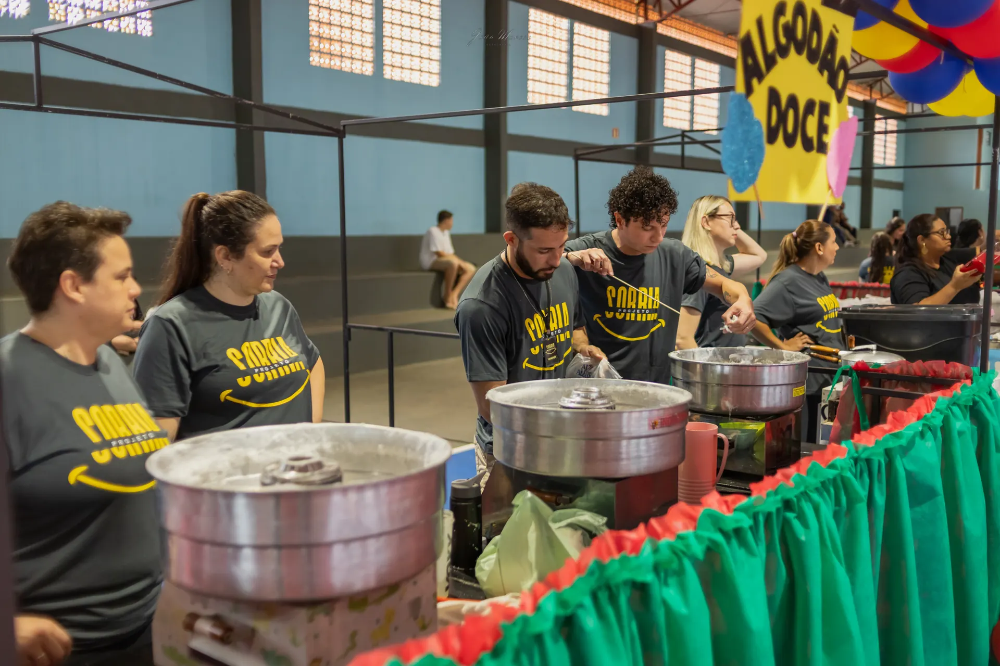
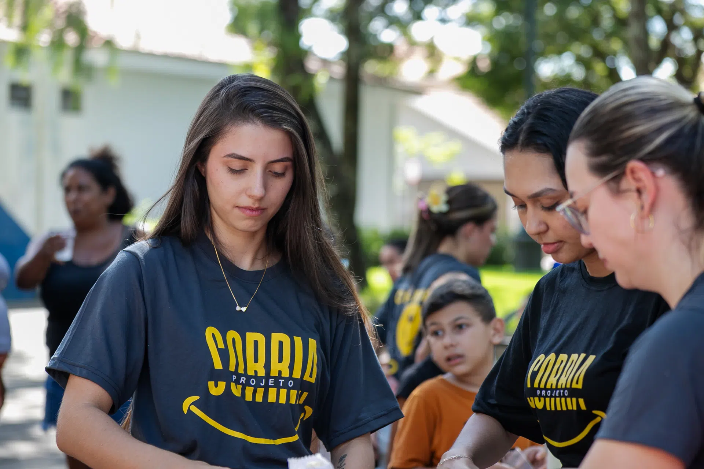
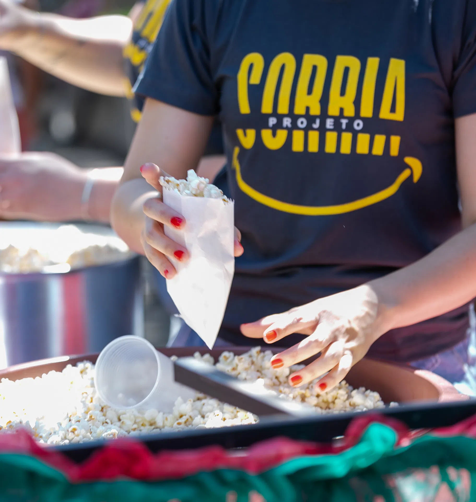
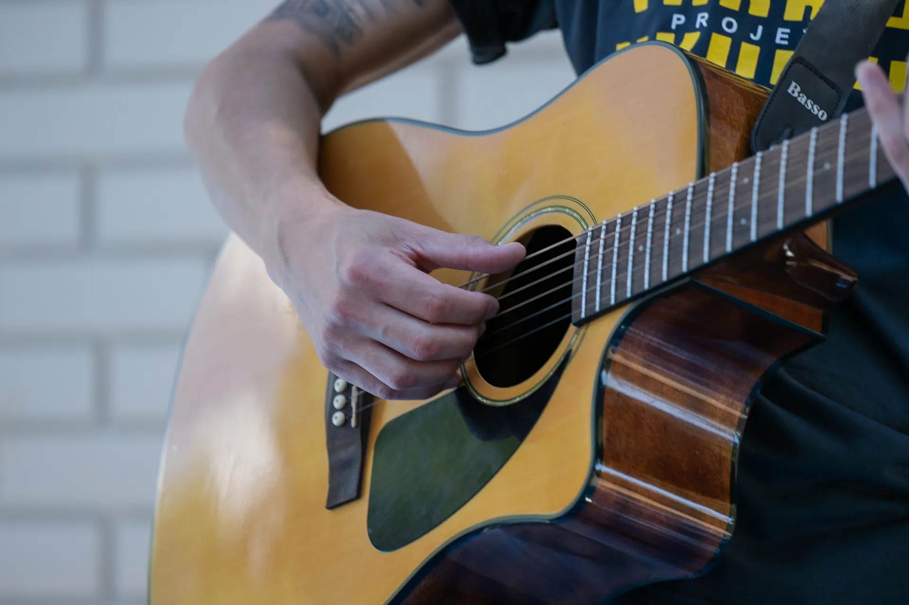
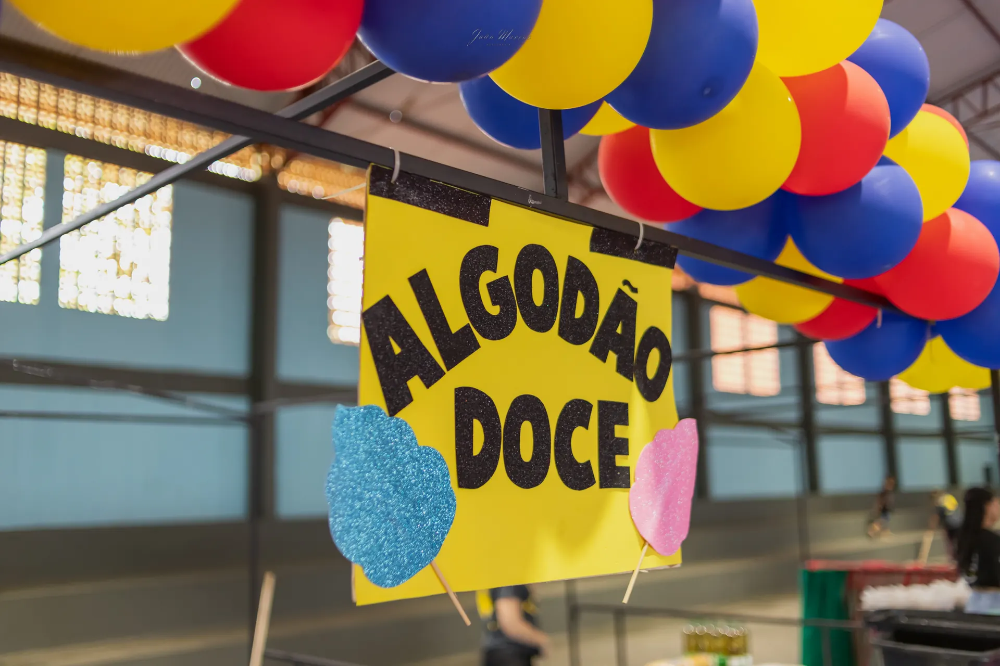
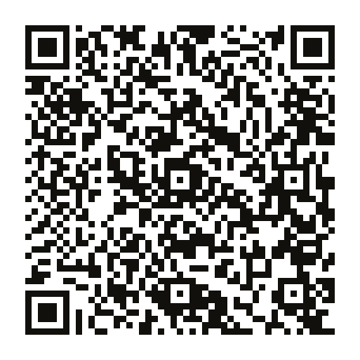
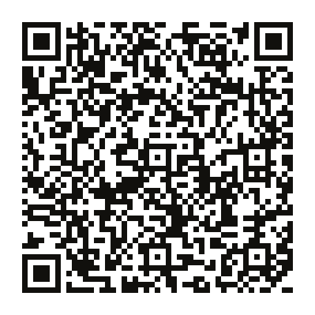
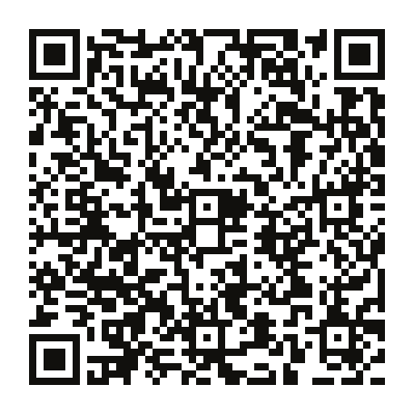

crianças alcançadas com afeto, diversão e cuidado.
☺ ALEGRIA QUE TRANSFORMA · ROLÂNDIA, PR
Um sorriso
muda tudo.
Um dia de carinho, brincadeiras e novas memórias pode ficar no coração para sempre. É isso que a gente constrói junto.
✳ Pequenos gestos. Grandes sorrisos.

Um time movido pelo carinho ♥:) SORRIAcom a gente!
✳
12.12nosso encontro anual
01 — ALEGRIA EM MOVIMENTOROLE PARA DESCOBRIR ↓
O QUE ACONTECE QUANDO A GENTE SE UNE
Um gesto de cada vez.
Milhares de sorrisos.
O impacto cresce com cada pessoa que chega junto. Estes números mostram o tamanho dessa corrente.
pessoas que doam tempo, talento e coração.
✳padrinhos e patrocinadores que fazem cada ação acontecer.
♡Números informados pela organização do Projeto Sorria.

♥ UM DIA FEITO EM COMUNIDADE ROLÂNDIA · 2025 QUEM SOMOS
Não é só uma festa.
É cuidado em forma de encontro.
O Projeto Sorria é uma iniciativa comunitária de Rolândia, no Paraná, que transforma encontros em momentos de acolhimento, diversão e cuidado para as crianças.
A cada ação, voluntários preparam o espaço e ajudam a criar um dia cheio de brincadeiras, música, partilha e boas lembranças para as crianças e suas famílias.
Esse encontro acontece porque muita gente soma: há quem doe seu tempo, quem apoie os preparativos e quem contribua para tornar as atividades possíveis. Mais do que um evento, o Sorria é uma rede de cuidado que cresce a cada edição.
01 Acolher02 Brincar03 Compartilhar
A PRÓXIMA AÇÃO
O próximo sorriso
já tem data marcada.
Todo dia 12 de dezembro a gente se encontra para mais um dia de alegria.
12 DE DEZEMBRO000DIAS
:00HORAS
:00MIN
:00SEG
RECORTES DE DIAS FELIZES
Histórias que
dão vontade de voltar.




UMA PEQUENA AMOSTRA DAS NOSSAS MEMÓRIASVer as fotos da ação ↗
TEM LUGAR PARA VOCÊ AQUI
Qual vai ser o
seu jeito de sorrir?
Leia o QR code ou toque no botão. O WhatsApp abre com uma mensagem pronta para começar a conversa.
01
Seja voluntário
Doe um pouco do seu tempo e venha criar momentos inesquecíveis.

Quero ser voluntário ↗02
Seja padrinho
Como padrinho ou patrocinador, você ajuda a tornar cada ação possível.

Quero ser padrinho ↗03
Ajude o projeto
Contribua para que a próxima ação chegue ainda mais longe.

Quero ajudar ↗WhatsApp: (43) 9681-0919 · Para contribuições financeiras, peça os dados oficiais diretamente à equipe.